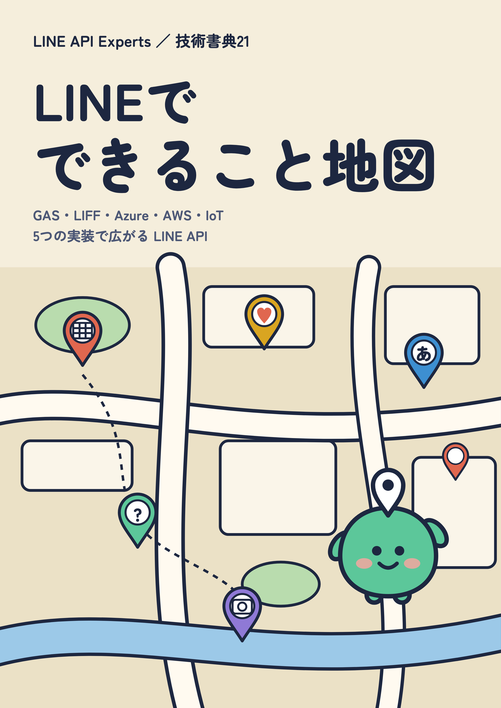
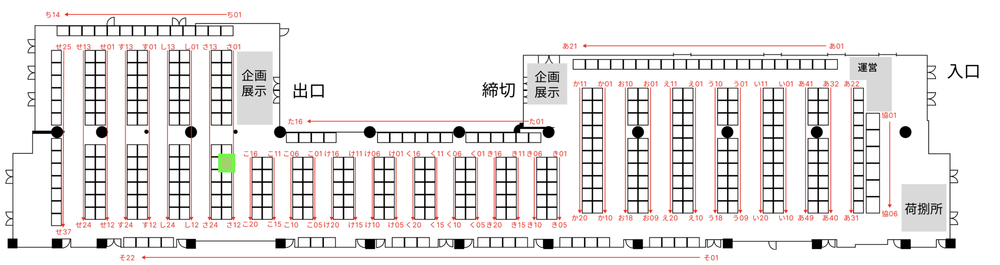

GAS・LIFF・Azure・AWS・IoT
5つの実装で広がる LINE API
メッセージに返事をする Bot から、地図アプリ、AI との英会話、IoT の防犯カメラまで。LINE API で作った5つの実装を、5人の著者が手順つきで紹介します。
頒布情報を見るコードをすべて理解できなくても、手順どおりに進めれば動くように書いています。
LINE Developer Community（LINE DC）の有志による執筆チーム「LINE API Experts」。各章の題材は、ハンズオンや LT で出た質問・作品から生まれました。
会場とオンラインの両方で頒布します。

さ08 ここ！